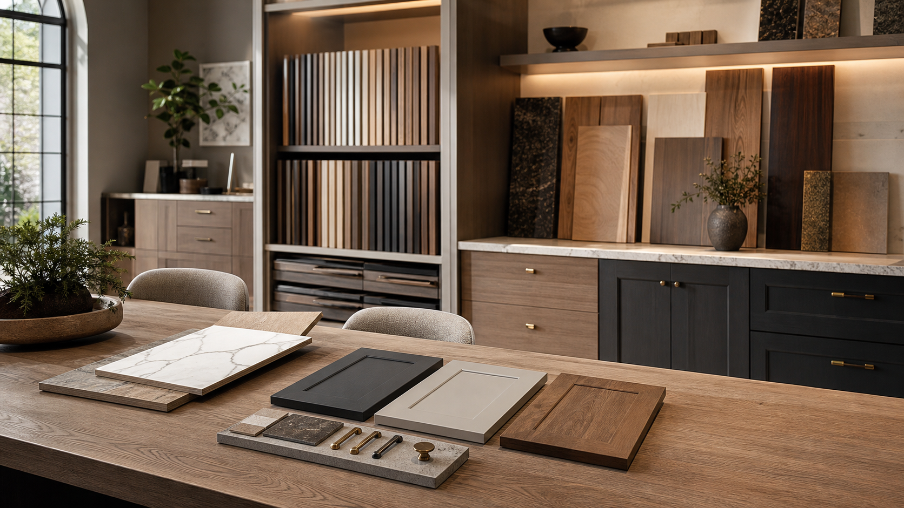
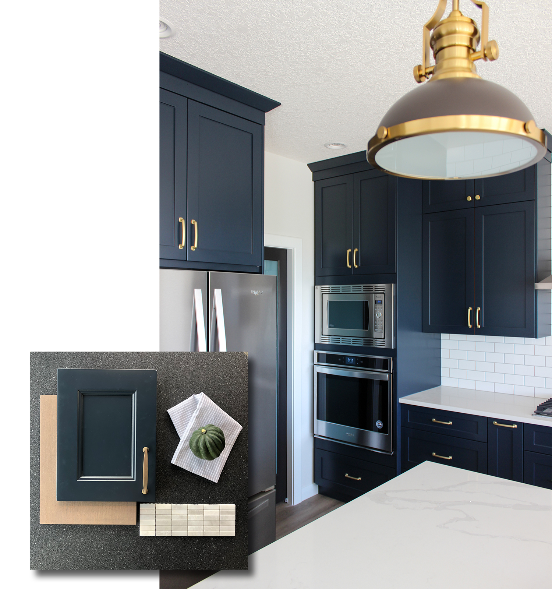

What should I bring to a cabinet design consultation?
Bring room dimensions if available, inspiration photos, appliance information, renovation or builder timelines, and notes about storage problems you want to solve.

Process
From renovation planning to new-home cabinetry, the Bjornson process keeps design, budget, production, delivery, install, and service connected.
The showroom experience
From curated cabinet finishes and hardware to integrated storage details, the design process is built to help homeowners make confident decisions without losing sight of budget, timeline, and daily use.
Clarify space, goals, lifestyle, and budget before drawing solutions.
Shape cabinetry, finishes, materials, and storage around the home.
Coordinate production, delivery, install, service, and warranty details.
Kitchen design and sales
The showroom assets and project images are brought forward with a quieter, more premium point of view so clients can see both the inspiration and the build quality behind it.
Request a callback
Cabinet design process Calgary
A successful cabinet project needs more than attractive finishes. Bjornson Designs helps clients organize layout decisions, storage needs, door profiles, hardware, material palettes, production timelines, delivery requirements, installation details, and after-install service.
The process is built for real Calgary homes: renovations with existing conditions, new builds with builder timelines, kitchens that need better flow, bathrooms that need smarter storage, and showroom decisions that need to feel clear before cabinetry is ordered.
Cabinet process FAQ
Bring room dimensions if available, inspiration photos, appliance information, renovation or builder timelines, and notes about storage problems you want to solve.
Yes. The showroom process helps compare cabinet finishes, door profiles, hardware, colors, wood tones, and materials against budget and daily use.
Yes. Delivery, installation, service, and warranty roles are part of the overall cabinetry process so the project moves beyond drawings into a finished room.
The steps are similar, but timelines, site readiness, measurements, and coordination needs are adjusted for the type of project.